今回の講師は、ベルギービール広報センターの佐藤ひとみさん（５１年卒）。
ベルギービールを飲みながら、ベルギービールとベルギー文化の面白さを語っていただきました。
ベルギービールは、ハーブの入ったビールや、アルコール度数が8.6パーセントと、日本のビールに比べて極めて度数の高いビールなど、様々なビールがあります。
それらの中から、佐藤さんがいくつかセレクトし、それに合わせた料理を食べ、ベルギー通になれる食べ方まで教わり、満足なひとときを過ごしました。
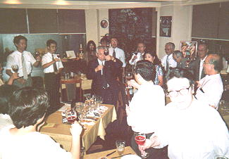
乾杯の音頭は、高中５０回卒の中村さん
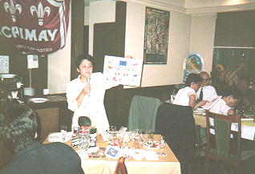
ベルギーに関するクイズを行う佐藤さん
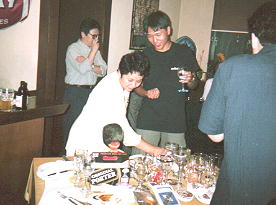
テーブルの上は、ベルギービールのグッズで一杯
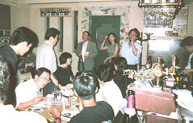
会場風景 今回は３５人の出席
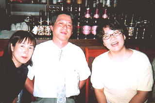
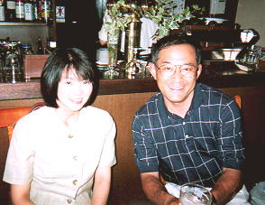
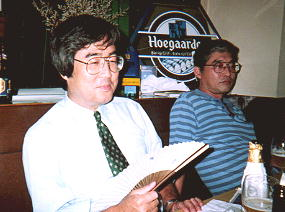
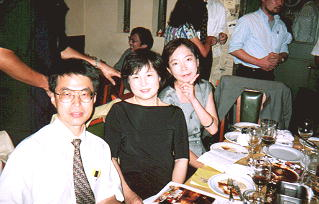
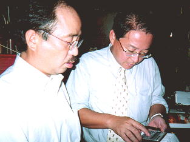
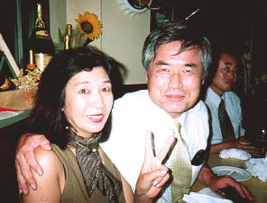
左、関口さん(37卒) 右、喜岡さん(37卒)
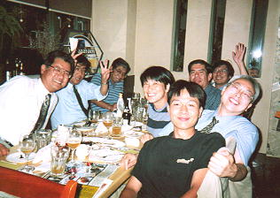
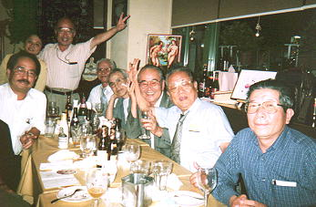